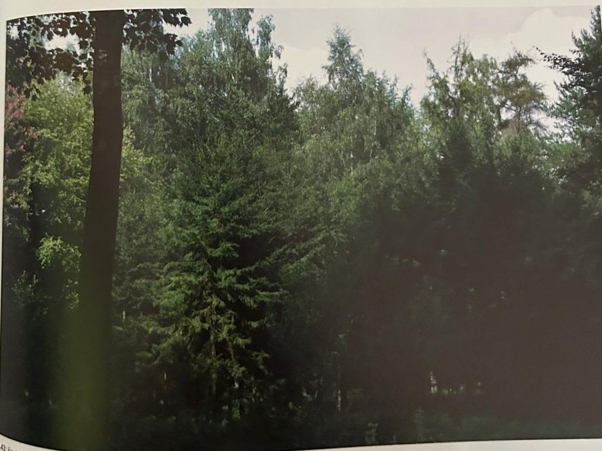
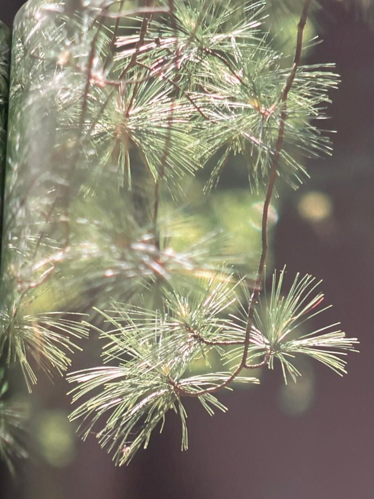

Groepen › Nieuwe Wereld
12. New Brunswick, Acadisch bosgebied

De oostelijke provincies van Canada, Quebec en New Brunswick, zijn aan de noordzijde nog begroeid met boreale wouden. We vinden hier de Struikden, de tegenhanger van de westelijke Draaiden, de Noord-Amerikaanse lork en de Oost-Amerikaanse levensboom. De majestueuze Amerikaanse eik op de hoek van de arboretumgroep valt ecologisch gesproken, nog enigszins uit de toon tegen die achtergrond. Naast de Witte en de Zwarte spar, komt hier ook de Rode spar voor, die zich verder zuidwaarts verspreidt over de hoogtes van het Appalachengebergte. Rode den en Weymouthden verschijnen op zandige en goed afgewaterde bodems. In het overgangsgebied naar de rijke Oost-Amerikaanse loofbossen vertonen zich meer Amerikaanse eiken, olmen, beuken en notenbomen, waarvan sommige zich wel op de rand van hun verspreidingsgebied bevinden. Dit is, al sinds de kolonisatie van Amerika, uitgesproken houthakkersland.
Uit het boek
1,85 ha · 33 soorten · 1027 bomen
- De Weymouthden staat dicht bij de ingang van het arboretum, maar kwijnt door roest.
- Wandeltip: loop tussen 11 en 12 en daarna tussen 12 en 13 voor de overgang van taiga naar loofbos.


Bron: Geografisch Arboretum Tervuren. Een wereldreis rond bomen (2020), p. 142 en volgende.
Deelgroepen
- 12 – New Brunswick
Soorten in deze groep (33)
- Picea rubensRode spar · 341 bomen
- Acer saccharumSuikeresdoorn · 77 bomen
- Betula papyriferaPapierberk · 70 bomen
- Fagus grandifoliaGrootbladige beuk · 59 bomen
- Acer x freemaniiFreemanesdoorn · 50 bomen
- Larix laricinaNoord-Amerikaanse lork · 50 bomen
- Picea glaucaWitte spar · 50 bomen
- Ulmus americanaAmerikaanse iep · 35 bomen
- Pinus strobusWeymouthden · 30 bomen
- Quercus rubraAmerikaanse eik · 29 bomen
- Betula populifoliaPopulierberk · 26 bomen
- Thuja occidentalisWesterse levensboom · 25 bomen
- Pinus banksianaStruikden · 24 bomen
- Cornus alternifoliaAmerikaanse pagodekornoelje · 23 bomen
- Acer saccharinumZilveresdoorn · 20 bomen
- Tilia americanaAmerikaanse linde · 20 bomen
- Alnus viridis subsp. fruticosa17 bomen
- Diervilla lonicera12 bomen
- Alnus viridis subsp. crispa10 bomen
- Pinus resinosa10 bomen
- Alnus rugosaRosse els · 7 bomen
- Celtis occidentalisAmerikaanse netelboom · 6 bomen
- Crataegus holmesiana5 bomen
- Physocarpus opulifoliusGewone blaasjesvrucht · 5 bomen
- Populus tremuloidesAmerikaanse ratelpopulier · 5 bomen
- Crataegus dodgei4 bomen
- Juglans cinereaGrijze walnoot · 4 bomen
- Salix scouleriana4 bomen
- Cornus obliqua3 bomen
- Betula alleghaniensisGele berk · 2 bomen
- Ostrya virginianaAmerikaanse hopbeuk · 2 bomen
- Tilia americana var. fastigiata2 bomen
- Crataegus submollis1 boom
Tekst en foto: arboretum-tervuren.be (Koninklijke Schenking), met toestemming gebruikt.